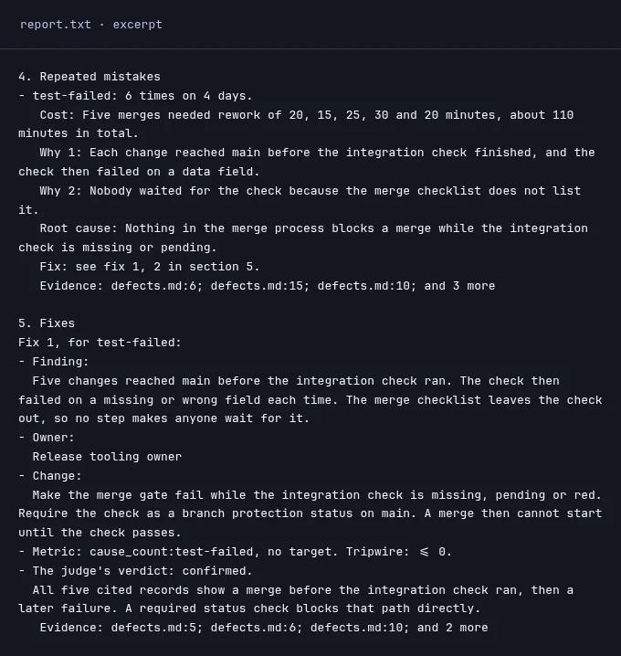

FOR DEVELOPERS USING CODING AGENTS
Stop fixing the same mistakes.
A CLI that finds repeated coding-agent mistakes and proposes evidence-backed fixes.
Start in your project
npm install -g learn-from-mistakes-axi
learn-from-mistakes-axi init
learn-from-mistakes-axi retro --waitNode 22.13+. Bring signed-in agents. init asks you to choose a worker, a judge and their models. Setup guide →

Fix the pattern, not just the latest failure.
- 01 / READ
Find what repeats.
A worker reads your defect logs, failed checks or selected agent sessions. It groups failures by cause and keeps the evidence.
- 02 / CHECK
Question the explanation.
A judge checks the findings and proposed fixes. Both roles always run. If either fails, the retro fails.
- 03 / DECIDE
Read it. Then choose.
The report names repeated causes, kept fixes and what was not checked. Nothing in your project changes by default.
Alone, or with Firstmate.
On its own, the CLI reads the sources you configure for your project. You start a retro and read the saved report. No supervisor or fleet is needed.
With Firstmate, opt in to reading its task logs and messages as extra records. It is never enabled automatically.
Integration setup →The summary is not the whole report.
If the run is still running after eight minutes, use attach to follow it. After completed, run report and open the file named by report_txt. Read “Not checked” too.
Your records. Your decision.
Inspect the configured sources before running. Excerpts go to the providers you choose after redaction. Redaction cannot catch everything. Do not use material you cannot share.
No per-retro fee. Models may cost.
The CLI uses your own signed-in agents or model provider. Calls use your subscription or paid plan. Cost depends on the models and records you choose.
Full reference →